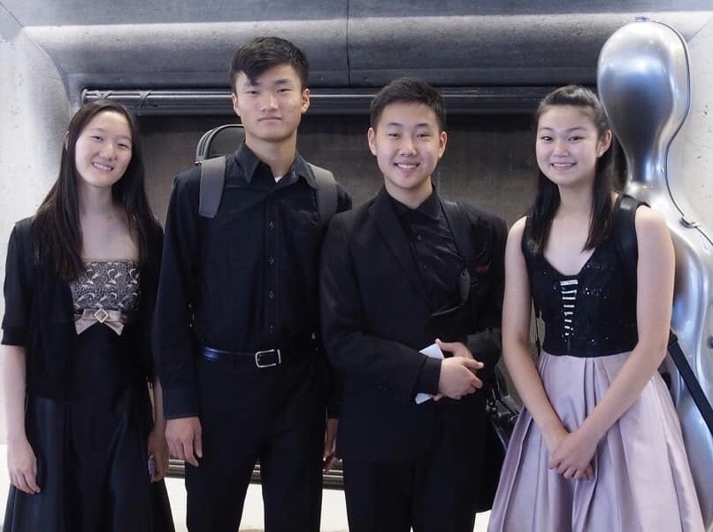
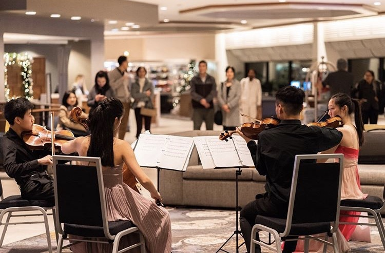
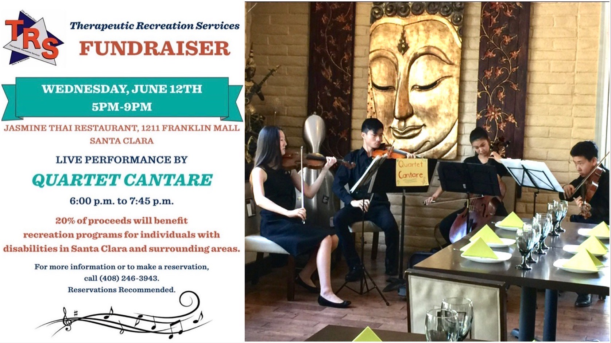
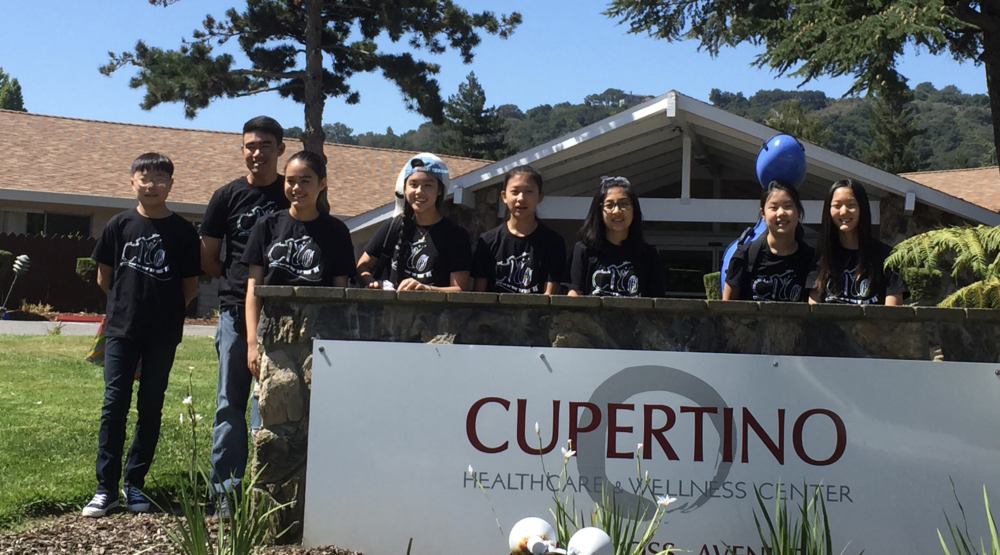
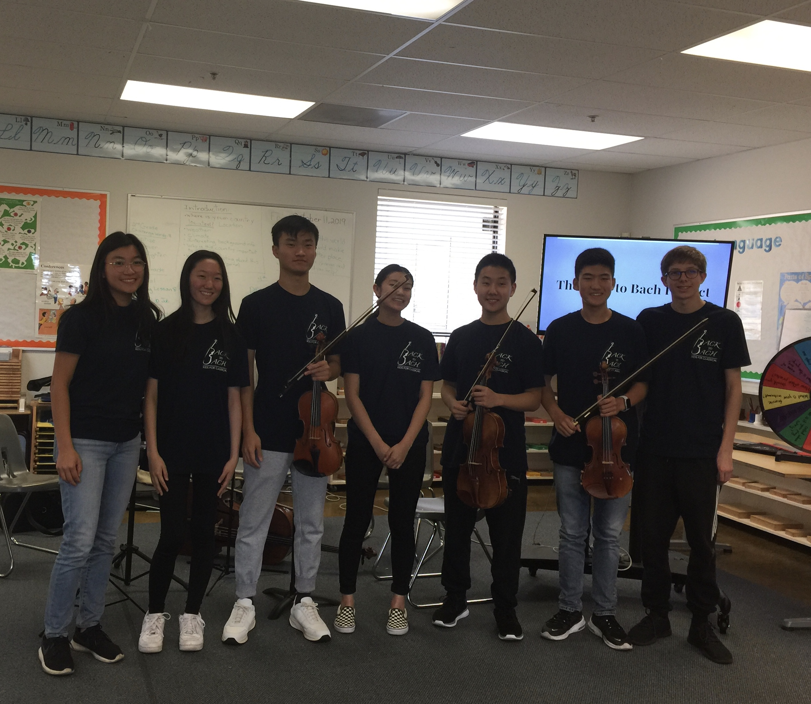

Quartet Cantare, Co-Founder, 2018-Present

Quartet Cantare finds a love in fostering relationships with special needs families and enhancing their emotional and social develop through performances and interactive games. We perform for them through Santa Clara Therapeutic Recreation Services and an annual Christmas concert at the Post-Secondary program at Wilcox while also talking, playing games, and watching movies post performances. Aside from our focus on forming relationships with special needs families, we also tackle a wide variety of issues throughout the community such as fundraising for fire-devastated families during the Northern California Wildfires and public works in the community as well as creating performances dedicated to the Health Care Heroes Worker during the pandemic.
3-29-19
Videos Dedicated to Healthcare Heroes Against COVID-19
This video is just one of the many we've created dedicated to healthcare heroes. We grealty appreciate the risks they take to help our community.
12-31-19

Magical Bridge Santa Clara Project Talent Showcase
Quartet Cantare raised $191 for the Magical Bridge Playground Project, which goes beyond the typical playground structure to create one friendly to the "growing autistic population, cognivitely challenged, visually and hearing impaired, physically limited, and the aging population."
08-10-19

Aegis Living Fremont Assited Living | Memory Care
Quartet Cantare reaches out to the senior community and performs favorites such as "The Prayer," "Gabriel's Oboe," "Music of the Night" from Phantom of the Opera, and many more at Aegis Living Fremont Assisted Living.
06-12-20

Therapeutic Recreation Services Fundraiser
Quartet Cantare partners with Jasmine Thai Restaurant. In exchange for performng, 20% of proceeds benefit recreation programs for individuals with disabilities. We raised $350 for Santa Clara Therapeutic Recreation Services!
03-29-20

Performance at Therapeutic Recreation Services
After performing at Therapeutic Recreation Services, Quartet Cantare talks with and plays games with the individuals in the program, mainly adults with special needs. We played fun music for them such as "A Million Dreams" from The Greatest Showman and "He's a Pirate" from Pirates of the Carribean.
12-23-18
Northern California Fire Benefit Concert
In light of the California Fires, Quartet Cantare organized and performed in its Northern California Fire Benefit Concert to raise money for fire devasted families. We raised a total of $10,570!
12-21-18
Christmas Concert for the Post Secondary Special Education Students at the Wilcox Post-Secondary Program
Quartet Cantare performs in this annual Christmas Concert for the Special Education Students at Wilcox Post-Secondary Program. Post performance, we celebrate the holidays together by watching The Polar Express and eating sour cream mashed potatoes and mac and cheese :)
Clio Muses,
Co-Founder, 2016-Present
Co-Founder, 2016-Present

Clio Muses was co-founded by me and a group of friends in 2016 and performs at Cupertino Healthcare & Wellness Center monthly, a rehabilitation center for seniors. In light of the Coronavirus, we still wanted to share our music with the elderly and switched to a virtual platform: The 'Clio' Project. Every other week, we send senior homes, nursing homes, rehabilitation centers, and hospices throughout California a 15 minute clip of a variety of pieces. Check out our music below!
The 'Clio' Project Videos in Response to COVID-19
Back to Bach
Co-Founder, 2019-Present
Co-Founder, 2019-Present

Back to Bach is an international non-profit program whose mission is to "inspire and develop music and arts education to children while teaching them the value of hard work and passion." We hope to make classical music more broadly accessible by implementing music in the curriculum of public and private schools. We have also partnered with renowned music conservatories and education programs to further promote the arts in schools. We give presentations and performances to children and encourage them to pick up an instrument.
05-27-20

Performance for UCSF Medical Center through Zoom
During the Coronavirus shelter-in-place, all Back to Bach members in the Alameda County Branch performed solo music for UCSF Medical Center's staff and cafeteria.
10-11-19

Monarch Christian School
At Monarch Christian School, Back to Bach gave a live presentation to its students showing the importance of practicing and encouraging them to pick up an instrument through games and performances.